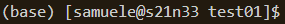
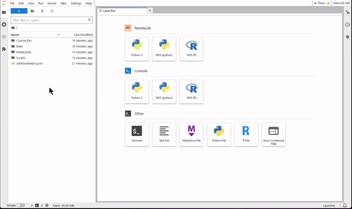

Accessing the NGS summer school on GenomeDK
If you are using GenomeDK, you have two options. One is to use a pre-packaged Docker container, which contains jupyterlab and the necessary packages you need to run all the notebooks. GenomeDK comes with singularity, which can import and execute Docker containers (with some perks, such as not showing system folders in the container, but we are going to take care about it by running a simple script) and is able to ensure full reproducibility of the analysis. The second option is to download the github repository of the course and create your own conda environment: this solution works also on any computing cluster where you can have conda installed and is shown in the page dedicate to the access with any computing cluster.
Singularity container
1. Log into the cluster using the command line, and substituting USERNAME with your actual user name:
ssh USERNAME@login.genome.au.dkif you do not yet have an account on GenomeDK, please get one Click on this link to get to the account request. and follow the instructions for the 2-factor authentication.
you need to have (or be part of) an active project on GenomeDK. This ensures you can get some computing resources to run the course material. Follow these instructions to request a project..
In Windows and the Powershell command line, commands might need
.exeat the end, such asssh.exeinstead ofssh. Newer versions of Windows do not require that, though.
2. Get into a folder inside your project, for example
cd MYPROJECT/ngsSummerSchoolGet instead into the folder for the course:
cd NGS_summer_school/USERNAMEwhere you substitute USERNAME with your own user id.
3. Use singularity to download the container of the course. This will take some time and show a lot of text, and at the end a file called course.sif is created into the folder.
singularity pull course.sif docker://hdssandbox/ngssummerschool:2024.074. Now it’s time to get a few resources to run all the material. We suggest one CPU and 32GB of RAM for the first three modules, and 2 CPUs and 64GB of RAM for the single-cell analysis. For the first configuration suggested, you get resources using
srun --mem=32g --cores=1 --time=8:0:0 --account=MYPROJECT --pty /bin/bashand very similarly for the second configuration, when you want instead to work on the single cell analysis.
Note you need your project name, and you can also choose for how long you want the resources to be available to you. Asking for resources means waiting for some time in a queue before they are assigned.
5. Once resources are assigned, note down the node name. This is on the left side of the command line: for example, in the figure below, the node is s21n33

6. execute the container with
singularity exec course.sif /bin/bashNote that the command line shows now Apptainer> on its left. We are inside the container and the tools we need are now available into it.
7. Now we need to run a configuration script, which will setup jupyterlab so that the packages are detected correctly. This is downloaded from the internet and runs immediately, downloading also the necessary data. If a folder called Data exists, it will not download the data again (also meaning that you can use our container with your own data folder for your own analysis in future)
wget -qO- https://raw.githubusercontent.com/hds-sandbox/NGS_summer_course_Aarhus/docker/scripts/courseMaterial.sh | bashYou need to create the file course.dif only once. Next time, you only need the configuration script.
8. We are ready to go. Activate the environment and start jupyterLab with the following:
conda activate /opt/conda/envs/NGS_aarhus_py
jupyter-lab --no-browser --port=$UID --ip=0.0.0.0you will see a lot of messages, which is normal. You need also to create a tunnel between your computer and genomeDK to be able to see jupyterlab in your browser. Now you need to use the node name you wrote down before! Open a new terminal window and write
ssh -L6835:NODENAME:6835 USERNAME@login.genome.au.dkwhere you substitute NODENAME with the correct depiction,and USERNAME with your own user id.
9. Open your browser and go to the address http://127.0.0.1:6835/lab. Jupyterlab opens
10. Now you are ready to use JupyterLab for coding. Use the file browser (on the left-side) to find the folder Notebooks. Select one of the four tutorials of the course. You will see that the notebook opens on the right-side pane. Read the text of the tutorial and execute each code cell starting from the first. You will see results showing up directly on the notebook!

Right click on a notebook or a saved results file, and use the download option to save it locally on your computer.
11. At the end of your session, it is a good idea to empty the cache of singularity. This will fill up your home folder very quickly (size limit is 100GB). Simply run these two commands:
rm -rf /home/samuele/.apptainer/cache/*
rm -rf ~/.singularity/cache/*Recovering the material from your previous session
Everything is saved in the folder you are working in. Next time, follow the whole procedure again - the download script will only link the packages to jupyterlab and avoid downloading new data, notebooks and scripts, because the folders will be detected as existing!